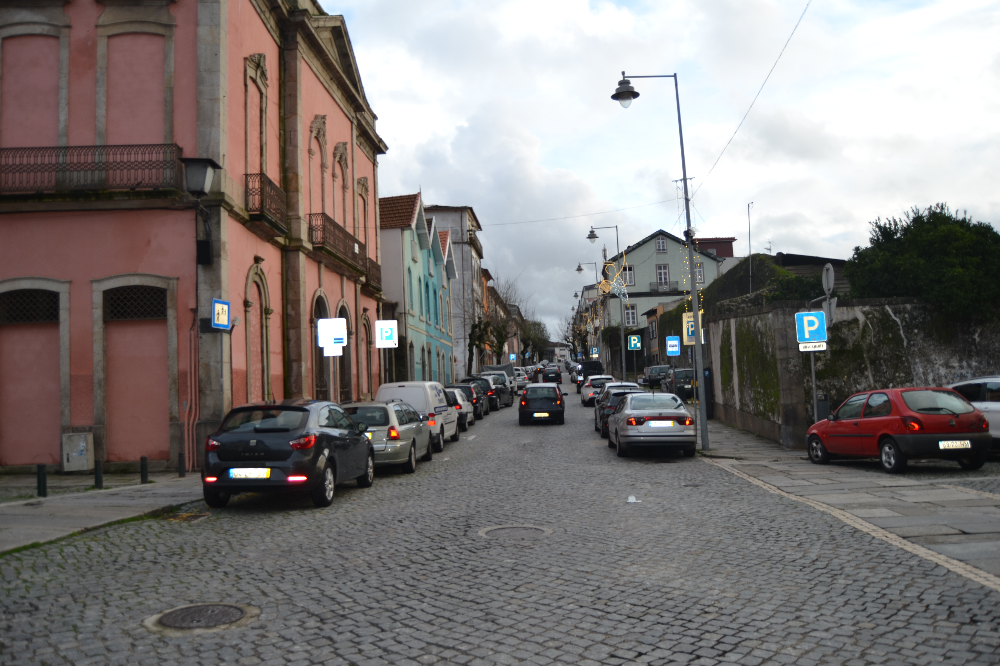

Rua Verde - nascente.Rua Verde - poente.Imagem atual da Rua

Imagem atual da Rua
Longa rua, com início no postigo de S. Sebastião e fim na
rua de Maximinos. O seu traçado prolongava-se, porém, até à
Porta de S. Francisco, através das
ruas dos Sapateiros e do Campo.
Decalcando, uma rua da cidade romana, era esta a mais ocidental das artérias
intra-muros da velha urbe medieval.
Ponto privilegiado nas ligações com Maximinos e a
capela de S. Sebastião, o seu traçado foi no séc. XIX (inícios?)
violentamente rompido com a continuação da rua das travessas, que, abrindo uma brecha
nas muralhas, a ligou com o campo de S. Miguel o Anjo; no fim do mesmo
século, por volta de 1880, foi alargada, sendo destruídas todas as casas,
excepto uma, de dois pisos, no seu extremo Norte, recebendo então o nome de D. Frei
Caetano Brandão.
Em 1750 apresentava-se dividida em duas: uma, a Norte da
rua das Travessas com o nome de rua Verde; outra, a Sul, chamada somente
Couto do Arvoredo.
O Couto do Arvoredo estava parcialmente construído (ainda hoje, aliás,
do lado Este conserva os quintais; e os do Oeste só nos anos 60 e 70 do nosso séc. foram
ocupados com habitações), com casas simples, de 2 pisos, de um tipo mais frequente fora
de muralhas, nos arrabaldes, sem varandas e com as janelas apenas tapadas por portas de
madeira.
A rua Verde, embora apresente um tipo de casa também muito simples, e
de contrução sem dúvida arcaica, estava já em 1750 toda construída. Mantém,
todas as casas apenas com dois pisos (excepto duas), com aberturas predominantemente
tapadas por portadas de madeira, raríssimas gelosias e varandas e algumas casas com
janela do tipo bracarense. Muito curiosos são os primeiros cinco edifícios do lado
Nascente e uma boa parte dos do Poente: são geralmente de dois vãos, 2 pisos, porta no
rés do chão e 2 janelas no andar, com um ritmo bem marcado e, sobretudo, com o sobrado
muito pronunciado, mostrando bem a fragilidade dos seus materiais construtivos.
Das 24 casas do lado Nascente e 33 do Poente, 3 e 13 são, respectivamente, prazos do
Cabido.